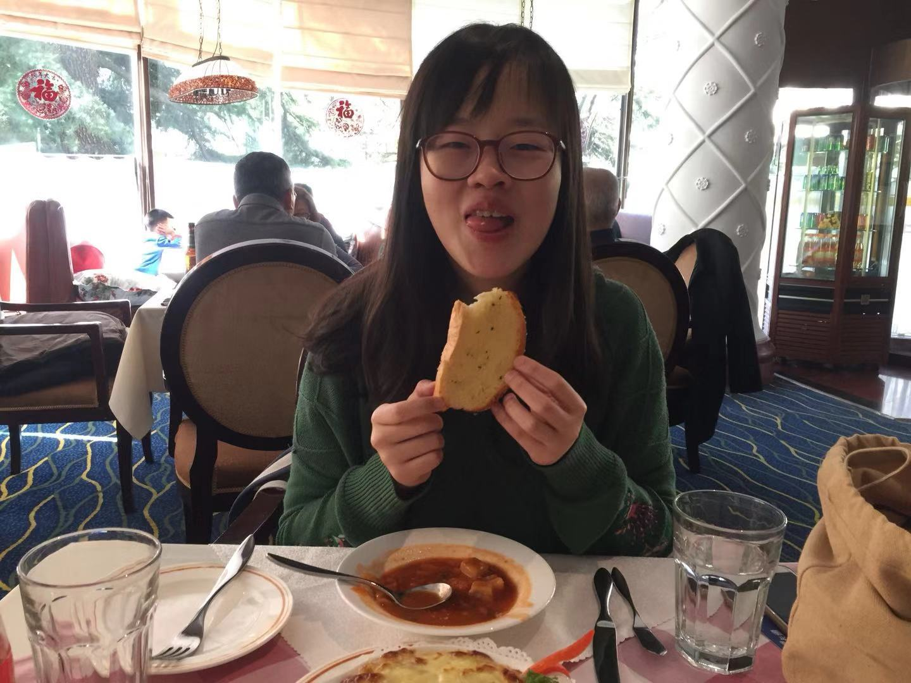

Haoxue Fan
|  | Senior Student Majoring in Psychology NOTE: Jun 4 2019: This page is still under construction, not a publicly released one |
We choose to go to the moon, not because it is easy, but because it is hard. — John F. Kennedy
About me
I'm Haoxue Fan (樊浩雪), a senior student at PKU majoring in Psychology with a minor in Economics. I will join Prof. Elizabeth Phelps's Lab at Harvard University, starting this fall.
I have long been fascinated by human's complex social behavior and emotioo experience. I am particularly interested in how people solve uncertainty during social interaction and how this process is influenced by contextual factors(e.g. stress, social identity). I am also interested in collective decision-making. As a long-term goal, I hope that I can leverage my knowledge to better understand clinical population.
I believe that an interdisciplinary and multi-level approach is beneficial to study these complicated (and interesting!) topics. I plan to combine behavioral experiments, computational modeling and neuroimaging method, and gaining insights from disciplines such as Economics, Computer Science, and Sociology.
Research Experience
 |
Social and Affective Neuroscience Lab, Brown University, Providence, RI
|
|
|
Learning and Decision-making Lab, Peking University, China
|
Education
 |
Harvard University, Cambridge, MA |
 |
Peking University, Beijing, China |
 |
UC Berkeley, Berkeley, CA |
Contact
Address:
Room 222, Building No.37, Peking University, Beijing, China, 100871.
Email:
haoxuefan1997@gmail.com
fanhaoxue@pku.edu.cn
haoxue_fan@g.harvard.edu
Homepage:
http://haoxue-fan.github.io